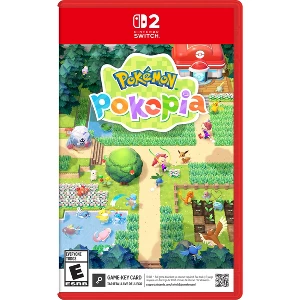

Pokemon Pokopia
Overview
Pokopia is a beautiful, relaxing Pokémon experience that flips the series into something completely different. Instead of battling, it’s all about building, exploring, and bringing a quiet world back to life, giving it a nostalgic but peaceful vibe that really sticks with you.
Gameplay & Feel
Pokopia’s gameplay is slow, sandbox-style, and really focused on exploration and building rather than pressure or competition. You’re moving through open areas, gathering resources, shaping the environment, and unlocking new parts of the world as you go. A lot of it is just interacting with the space and gradually turning something empty into something alive, which makes the progression feel natural instead of forced. The feel is super calm and almost meditative. There’s no rush, no real stress, just this steady loop of exploring, creating, and watching the world improve. It has that cozy, slightly lonely vibe at first, but as more Pokémon show up and the world fills in, it shifts into something warm and satisfying. It’s the kind of game you play to relax, not to grind.
Gameplay Footage
Final Thoughts
Pokopia stands out as a really refreshing take on what a Pokémon experience can be. It strips away the usual competitive focus and replaces it with something quieter and more personal, where the reward comes from building, exploring, and seeing the world slowly come to life. It’s not about difficulty or high stakes, it’s about atmosphere and progression that actually feels meaningful. The kind of game you come back to just to unwind, and one that sticks with you more because of how it feels than anything else.